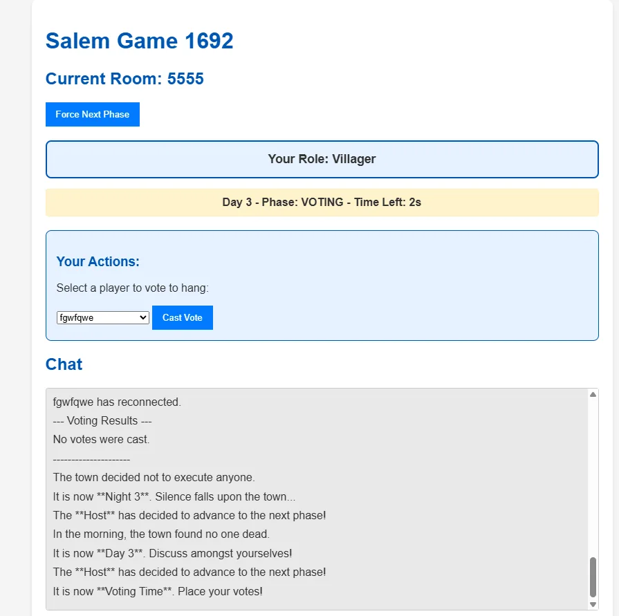
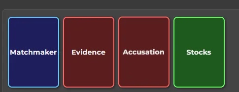
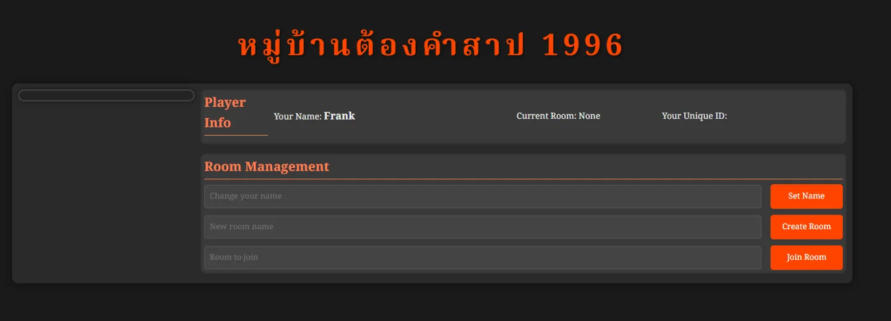
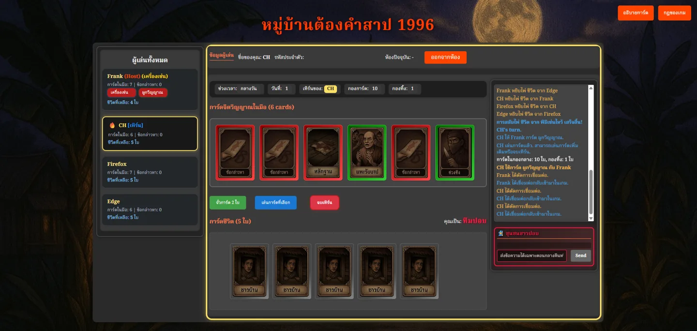
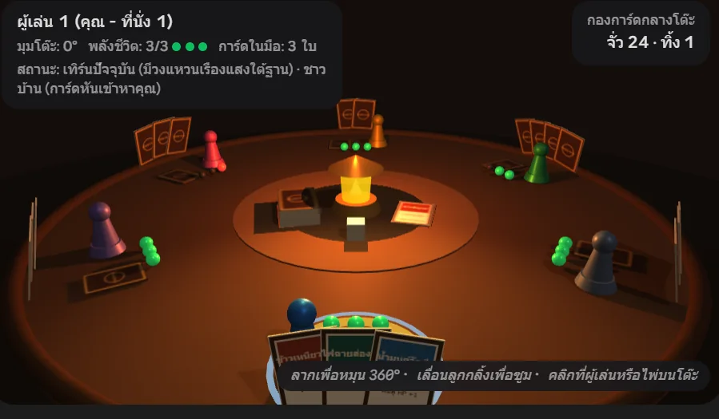
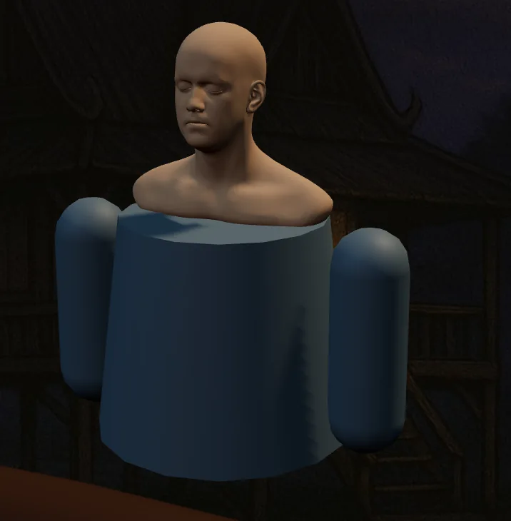
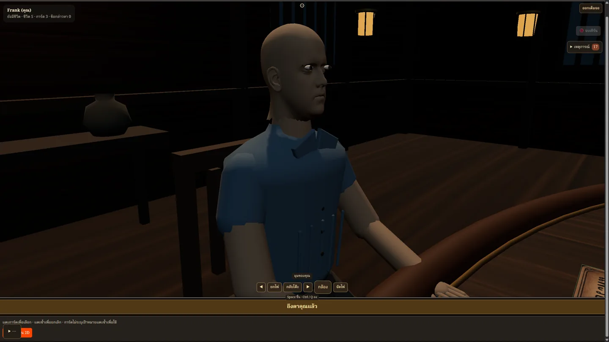
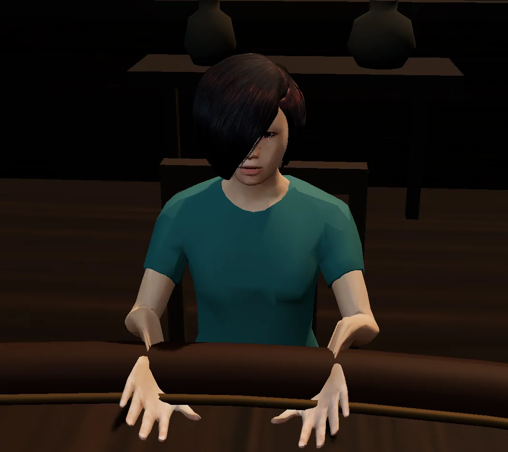
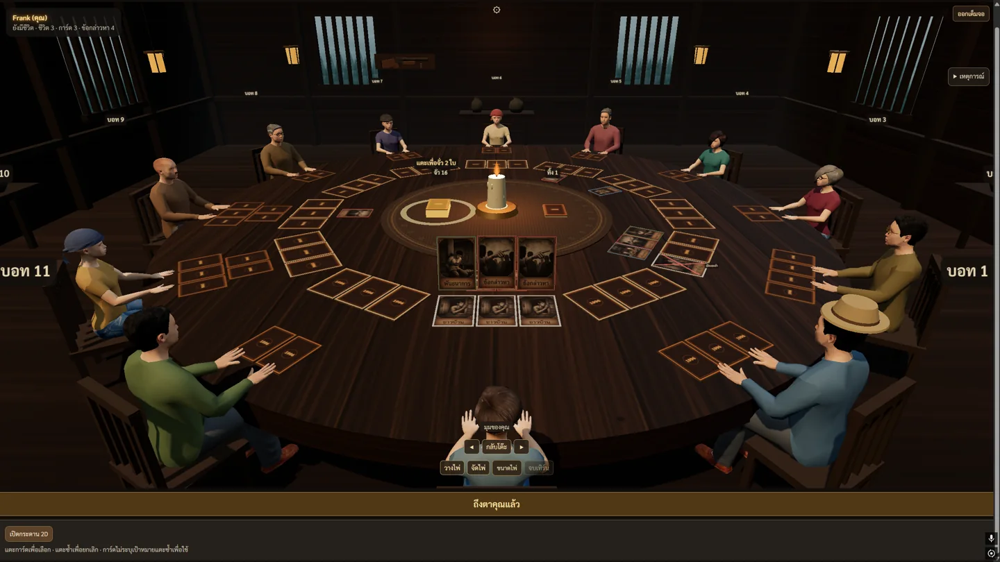

เรื่องเล่าจากภาพระหว่างพัฒนา · อ่านประมาณ 2 นาที
ตอนแรกมีแค่ไพ่
ทำไปทำมา… มีทั้งหมู่บ้าน
จากต้นแบบที่ได้แรงบันดาลใจจาก Salem 1692 สู่ หมู่บ้านต้องสาป 1996 Halloween Edition เกมไทยที่มีทั้ง 2D และโต๊ะ 3D ให้เพื่อนมานั่งล้อมวงกัน
ช่องกับตัวหนังสือ หมู่บ้านไทย วงไพ่ 3D
01 · เริ่มจากให้มันเล่นได้ก่อน
ยังไม่มีผี มีแต่กล่อง
จุดเริ่มคือเอาแนวคิดจาก Salem 1692 มาลองทำเป็นเกมบนเว็บ ต้นแบบยังเป็นหน้าขาว ๆ ก่อนจะค่อย ๆ มีห้อง ผู้เล่น บทบาท และการ์ดสีที่มีแต่ชื่อ ภาพสวยไว้ทีหลัง ขอให้เล่นด้วยกันได้ก่อน!


02 · ย้ายความหลอนมาอยู่ใกล้บ้าน
จากแม่มด สู่ปอบในหมู่บ้านไทย
ค่อย ๆ ดัดแปลงชื่อ บทบาท และบรรยากาศให้เป็นไทย กลายเป็นปอบ หมอผี เครื่องเซ่น และหมู่บ้านลับแลในปี 1996 การ์ดเริ่มมีภาพ บ้านไม้กับแสงตะเกียงเริ่มมา จากเว็บไพ่เรียบ ๆ ก็เริ่มมีโลกของตัวเอง


03 · ถ้าไพ่ลงไปอยู่บนโต๊ะล่ะ?
จากคลิกปุ่ม เป็นนั่งล้อมวง
พอมีเกม 2D แล้ว ก็ลองเพิ่มโต๊ะ 3D ให้หยิบไพ่ มองรอบวง และเลือกคนบนโต๊ะได้ รุ่นแรกยังใช้ตัวหมากสีแทนคน แต่เทียนติดแล้ว โต๊ะพร้อมแล้ว… เหลือแค่ชาวบ้าน

04 · ชาวบ้านมาแล้ว แต่…
ก่อนจะหลอนเพราะปอบ
เคยหลอนเพราะโมเดลมาก่อน
เปลี่ยนตัวหมากเป็นคน ฟังดูเหมือนแค่เปลี่ยนโมเดล พอลองจริงก็ได้ทั้งหัวที่ยังไม่เข้ากับตัว ตาที่จ้องแรงไปนิด และมือที่ติดขอบโต๊ะ ต้องค่อย ๆ ปรับสัดส่วน ท่านั่ง และตำแหน่งทีละอย่าง



05 · หมู่บ้านในวันนี้
จากกล่องสี สู่ชาวบ้านรอบโต๊ะ
ตอนนี้มีทั้ง 2D และ 3D ตัวละคร 12 แบบ บรรยากาศกลางวัน–กลางคืน และลูกเล่นอย่างลูกซองกับภาพหลอก แต่สิ่งที่ต้องเก็บงานต่อก็ยังเป็นเรื่องใกล้ตัว: อ่านไพ่ให้ชัด กดให้ง่าย เล่นบนมือถือให้สะดวก และมีบทสอนให้เพื่อนใหม่เข้าวงได้

หมู่บ้านยังสร้างต่อ ส่วนปอบ… รอเพื่อนเข้าห้องอยู่